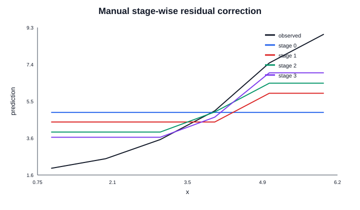
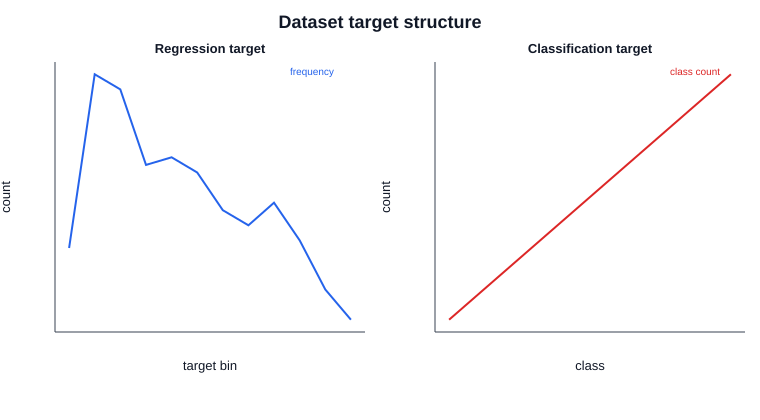
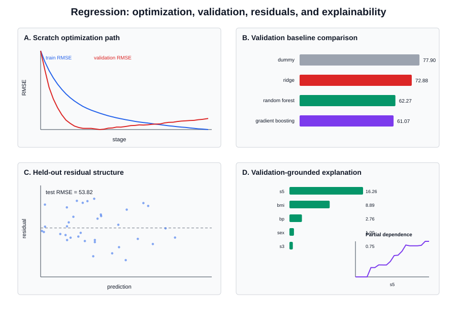
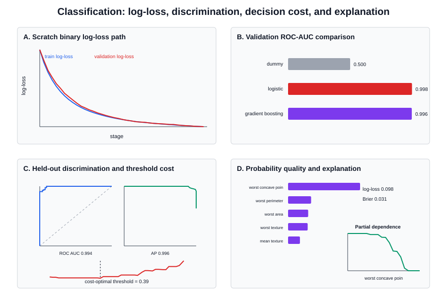

Executed end-to-end notes: functional-gradient derivation, scratch regression and classification, scikit-learn implementations, diagnostics, decision policy, and production monitoring.
Gradient boosting builds an additive stage-wise model. Every new shallow tree approximates the current negative gradient rather than fitting the target independently.
For squared error the negative gradient is the residual y − F(x). For binary log-loss it is y − p, with Newton leaf corrections using local curvature p(1−p).
The executed notebook implements both a regressor and a binary classifier, exposes staged predictions, and verifies optimization paths on held-out validation data.
Scikit-learn GradientBoostingRegressor and GradientBoostingClassifier are compared against dummy, linear, and random-forest baselines using leakage-safe splits.
Learning rate, stage count, tree depth, minimum leaf size, subsampling, early stopping, residual structure, calibration, threshold cost, permutation importance, and partial dependence are evaluated.
The package closes with cross-validation, data contracts, drift monitoring, probability-quality checks, threshold governance, and rollback criteria.




task,split,MAE,RMSE,R2,ROC_AUC,AP,LogLoss,Brier,BalancedAcc,F1,threshold regression,test,41.74554049541456,52.01182428869724,0.4894012111684536,,,,,,, classification,test,,,,0.9920634920634921,0.9953388256107694,0.11029075841043341,0.035612529986526434,0.9523809523809523,0.972972972972973,0.05
conda env create -f environment.yaml conda activate pga43-gradient-boosting jupyter lab python scripts/verify_package.py